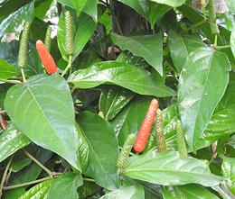

This pepper, native to India, is related to the round black pepper, but instead of separate berries, produces very tight seed spikes embedded with many tiny peppercorns.
This pepper was known in ancient Greece, but as a medicinal. It was used
as an important seasoning in Rome, interchangeable with Black Pepper, both
called Piper. It was much used in Medieval Europe in mixes called
"Strong powder", but by the 14th century it had been largely displaced by
Black Pepper. It is still used in vegetable pickles and the like in India and
Nepal, in cooking in Malaysia and Indonesia, and in North African spice
mixes. The photo specimens were up to 0.27 inch diameter and 1.7 inches
long (6.9 x 43 mm).
More on Pepper Family.
More on Spices.
 This photo of a live Indian Long Pepper Plant with ripening seed heads was taken in Tamil Nadu, India. Photo by Yercaud-elango distributed under license Creative Commons Attribution-Share Alike 4.0 International.
This root is used as both a medicinal and as a culinary spice in India and parts of China. Powdered, it us used to make an herbal tea, mixed with Ginger Root and/or Licorice Root and Jaggery or Honey - said to be good for general joint health and as a treatment for colds. The taste is earthy, lightly peppery, and slightly herbal. The root is very hard, so it must be ground for use.